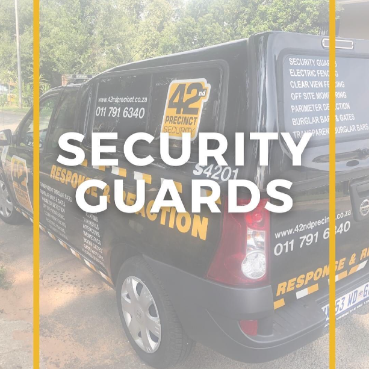
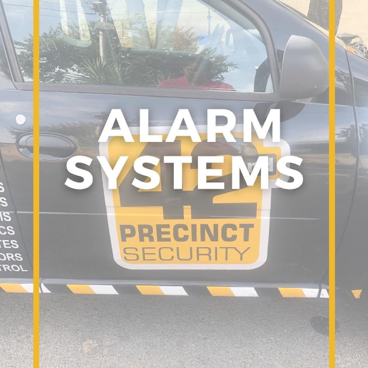
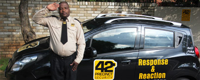

- Founded in 1992, as Max Security & Residential Patrols.
- Due to increasing demand, the company evolved to offer permanent and temporary on-site security officers.
- Continued expansion of both the response and guard’s divisions, including close liaison and involvement with all local crime prevention bodies, allowed the company to become the dominant Security Service in the area.
- By early 1997 the company was very well established and had already earned an extremely good reputation amongst the community who knew they could rely on Max Security to provide an efficient and reliable service.
- In 2002 a name change was applied for and 42nd Precinct Security was born. All clients accepted and embraced the name change and continued to be valuable customers of this company.
- The ownership of the company changed March 2004.The company is wholly owned by Allan Millard (MBA), who is the incumbent Managing Director, and has been at the helm ever since.
- In 2005, the Electronics Solutions Division was established, to to satisfy the ever-growing need of Intrusion Detection Systems in households and enterprise buildings.
Honesty, Integrity & Trust
Companies and Intellectual Property Commission (CIPC)
Forty Second Precinct Security is a properly constituted company registered with the Companies and Intellectual Property Commission (CIPC).
Brief History
Security Industry Regulatory Authority
42nd Precinct Security and its employees are registered with the Private Security Industry Regulatory Authority and comply with the relevant regulations, acts and statutory laws governing the industry.


Public Liability Insurance
Forty Second Precinct Security has liability insurance which covers for accident, injury, and death.
Main Products & Services
- Security Officers guarding Service permanent and ADHOC.
- Armed Response
- CCTV new and repairs
- Off-Site Monitoring
- Electric Fencing
- Perimeter Detection new and repairs
- Gate Motors new and repairs
- Alarms
- Panic Systems
- Intercom Systems new and repairs
- Access Control
- Perimeter Detection
- Biometrics
- Burglar Bars – Metal or Polycarbonate Armed Bar or Standard Bar
- Maintenance Contracts
- Solar to gate motors and intercoms
Security Officers
- Our focus is supplying diligent guards who focus on the task at hand.
- 24 hour trained Security Officers (dayshift and / or nightshift) on a permanent or temporary basis.
- We offer adhoc guarding for parties etc… charged out at an hourly fee.
- All security officers can be dressed in uniformed or plain clothes.
- We offer Residential, Commercial or Industrial Guards
- All security officers use electronic patrolling batons, to enforce patrolling.
- All patrol records are scrutinised by management.
- All personnel allocated to your premises will be fully trained grade C guards.
- Guards will be inducted to not only perform his regular and necessary duties, but to include your specific tailor-made requirements, which are included in a job description located at your site.
- 42nd Precinct Security formulates the agreed job description, and on an ongoing basis conducts comprehensive briefing on your individual requirements.
- Both parties will agree the specific job description for your site.
- Constant communication between the Client and 42nd Precinct is required to adapt the service to meet ever-changing needs.
- It is preferable that the guard has a satellite station where he can accommodate his stationary requirements, and personal effects.
Armed Response
- Armed Response and monitoring of Alarm systems is included in our business offering.
- We have an equipped control room with the latest technology to enable us to receive a multitude of alarm signals from client alarms.
-
These options will include but not limited to:
- Alarm
- Panic
- Medical Emergency
- Duress code
- AC Loss
- AC Restore
- Low Battery
- Openings
- Closings

We can transmit any, or all, alarm signals to relevant clients, via SMS or GPRS This affords our clients early notification on alarm signals transmitted by their own alarms. The Armed Response vehicle is notified to respond to the address by the Controller on duty in the control room. This after the necessary calls are made to ensure a real response situation. This would ensure that the vehicle Reaction Officer would know about the activation so that the officer responds in a coordinated manner and will arrive within three to seven minutes of being dispatched by the control room.
All vehicles are equipped with
- Satellite tracking
- GPS - All clients are pre-loaded on the GPS to ensure a quick as possible response time.
- Base Radios
- Cell phones
There is a rendezvous service for armed response clients. This does not have a call out fee associated unless the client has a specific daily requirement, or whether it be adhoc or regular. This is a point that must be discussed to understand how to quote and cost for it
Armed Response vehicles are stationed in and around the Ferndale, Randburg area and are moved to various points at different times determined by the control room when there are no alarms to be attended to, where the vehicles are required to respond to.
Electronic Solutions
We offer maintenance contracts for your pre-existing items and new items we install, which we service and repair. This is a lucrative arrangement particularly for clients who look to savings with limited down time. This arrangement allows that you the clients save costs.
Value added services.
42nd Precinct Security prides itself on its ability to be flexible, client focused and service oriented. The following value adding services on your site.Monthly Maintenance Contracts
42nd Precinct offers monthly maintenance contracts to clients who wish to keep their electronic devices checked and operational. A labour fee is charged and agreed upfront as a monthly charge. We then ensure that technicians regularly check what we have agreed, such electric fences, energizers, gate motors, access control, intercoms and CCTV. We will re-programme remotes or supply new if required. Generally, there is a huge labour cost saving to our clients who have maintenance agreements with us.- We do repairs and new installations to all makes of our value-added items listed below.
- All hardware repairs are returned to original equipment supplier for repair
- All repairs carry supplier warranties (OEM) and 42nd Precinct installationwarranties.

Our Electronic Solutions Division offers all types of electronic security ranging from:
- Alarm Systems, repairs and new installations
- Various electronic security solutions
- Armed Response radio installation including sms
- CCTV new and repairs
- Off Site Monitoring
- Electric Fencing new and repairs
- Gate Motors new and repairs
- Alarms new and repairs
- Intercom Systems new and repairs
- Access Control Systems booms and turnstyles including software
- Perimeter Detection outdoor beams and PIR
- Biometrics finger print systems
- Burglar Bars – Metal or Polycarbonate, Armed Bar or Standard Bar
- Maintenance Contracts
- Solar to gate motors and intercoms
Off Site Monitoring
- Offsite monitoring is a CCTV feature in our control room and is well supported by our suppliers.
- CCTV streaming using Fibre,
- GSM (cellular transmissions) messaging is also offered.
- This monitoring is done at our 24-hour secured and manned control room.